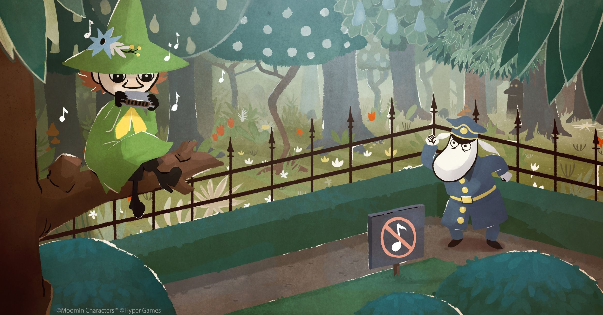

Koop
Snufkin
★ ★ ★ ☆ ☆
"Snufkin: Melody of Moominvalley betovert met zijn charmante muzikale avonturen en brengt de magie van Moominvalley tot leven."
Nieuwsgierig naar de betoverende wereld van indie games? Welkom bij onze showcase van enkele van de meest meeslepende en creatieve indie games die je ooit zult tegenkomen. Deze onafhankelijke meesterwerken hebben ons hart gestolen en we zijn verheugd om ze met je te delen. Dompel jezelf onder in de wonderlijke wereld van deze onafhankelijke kunstvormen, en laat je betoveren door de passie en toewijding die de makers in elk detail hebben gestopt. We nodigen je uit om mee te gaan op deze buitengewone reis en te ontdekken waarom deze games ons zo diep raken.
★ ★ ★ ☆ ☆
"Snufkin: Melody of Moominvalley betovert met zijn charmante muzikale avonturen en brengt de magie van Moominvalley tot leven."
★ ★ ★ ★ ★
"Ooblets combineert schattige wezentjes, boerderijmanagement en dansgevechten op een unieke en verslavende manier, waardoor het een must-play voor liefhebbers van indie games is."
★ ★ ★ ☆ ☆
"Melatonin biedt een adembenemende reis door dromen en realiteit, met een diepgaand verhaal en prachtige visuele stijl die je in zijn greep houdt."